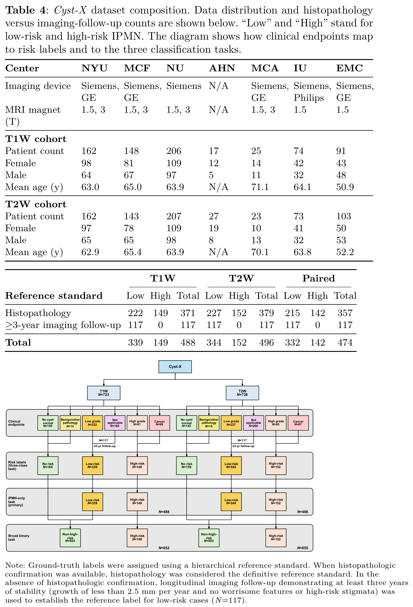
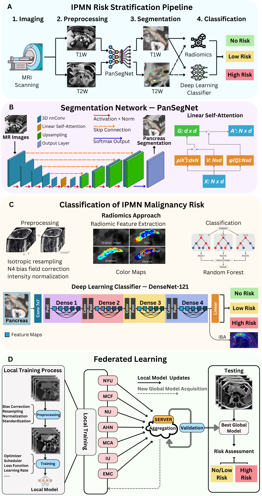
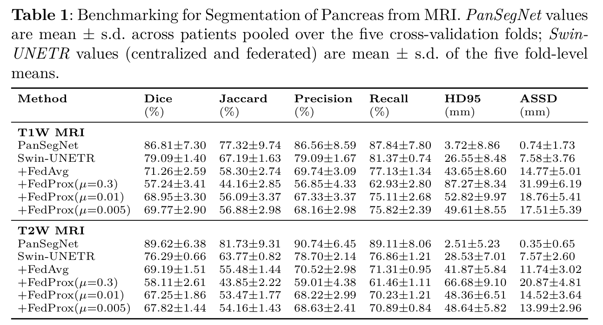
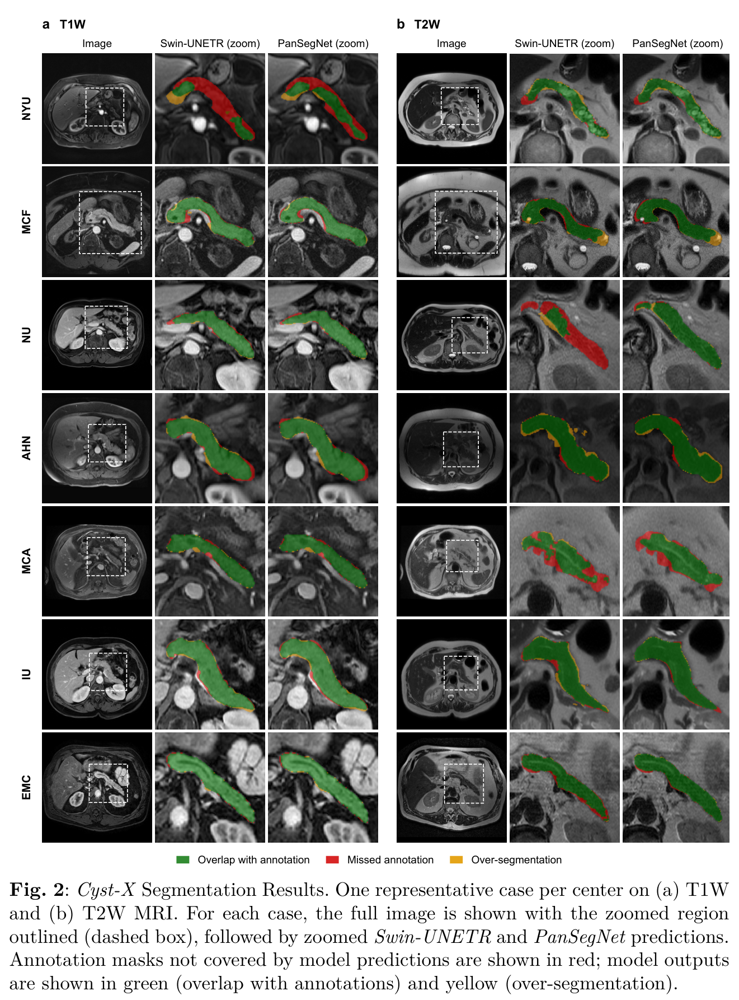
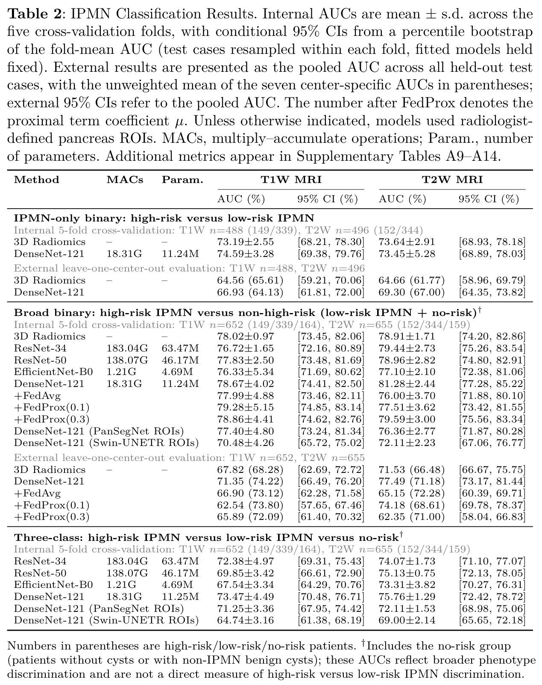
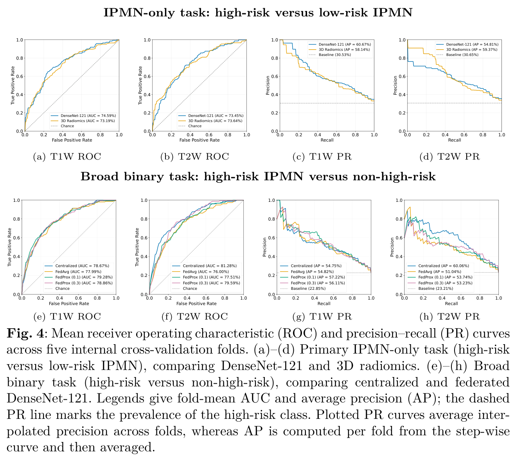
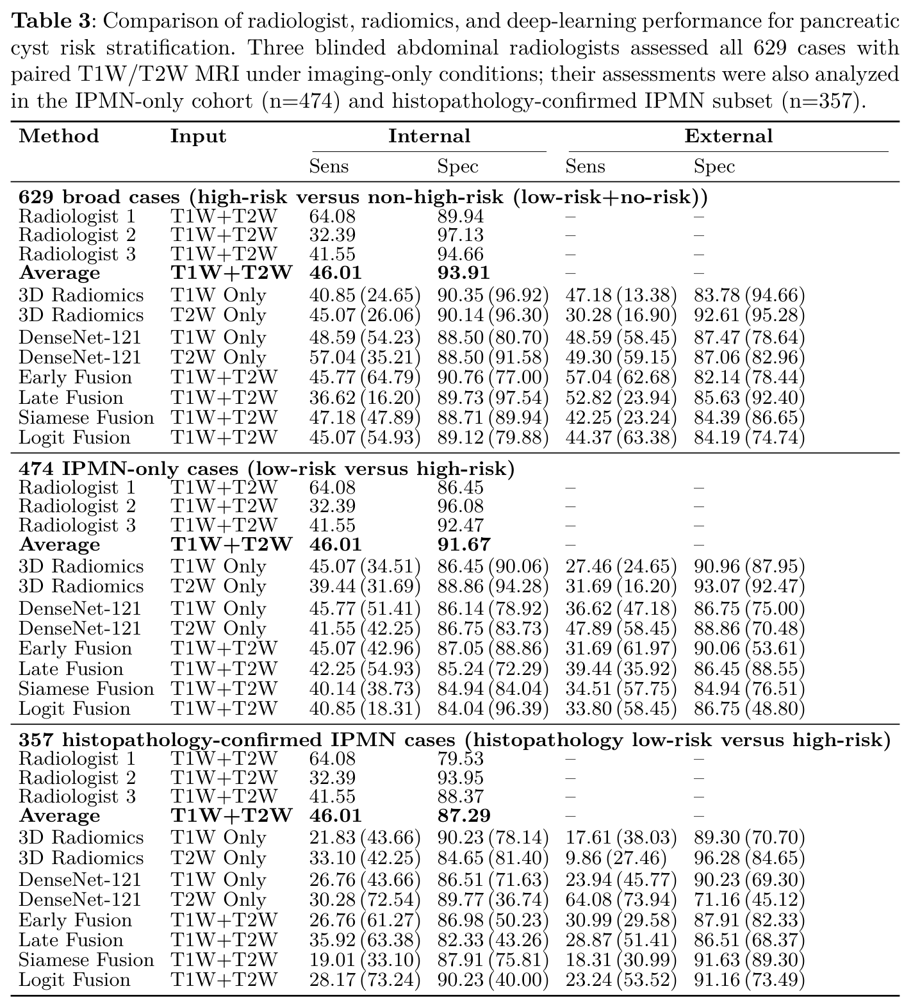

Cyst-X is a public multicenter MRI benchmark for intraductal papillary mucinous neoplasm (IPMN) risk stratification: 1,461 T1-weighted and T2-weighted MRI volumes from 764 patients at seven centers, released with expert pancreas masks, risk labels, patient-level splits and reference segmentation and classification models.
Intraductal papillary mucinous neoplasms (IPMNs) are pancreatic cancer precursors, and guideline-based risk stratification both over-treats indolent lesions and misses progression. We present Cyst-X, a public benchmark of 1,461 T1-weighted (T1W) and T2-weighted (T2W) MRI volumes from 764 patients at seven centers, with expert pancreas masks, risk labels, splits and reference AI risk-prediction models. PanSegNet segmented the pancreas with Dice of 86.34% (T1W) and 89.26% (T2W) on held-out centers. For the primary task, high-risk versus low-risk IPMN, a 3D DenseNet-121 achieved cross-validated AUCs of 74.59% and 73.45%; complementary broad binary and three-class tasks reached 78.67–81.28% and 73.47–75.76%. Because patient images often cannot be pooled across institutions, we also simulated federated learning across the seven centers. On T2W MRI, federated FedProx was similar to centralized training in center-averaged external AUC (71.00% versus 71.18%) but not in pooled AUC (62.35% versus 77.49%). Radiologist comparisons showed cohort-dependent sensitivity–specificity tradeoffs. Cyst-X supports reproducible method development and identifies within-IPMN risk discrimination and cross-center score comparability as open challenges.




The primary task separates high-risk from low-risk IPMN. Two complementary tasks are reported: broad binary (high-risk IPMN versus low-risk IPMN plus no-risk) and three-class classification. Models are evaluated by patient-level five-fold cross-validation and by leave-one-center-out external evaluation, with centralized and federated (FedAvg, FedProx) training.


Three blinded abdominal radiologists scored the same patients under imaging-only conditions. The comparison is reported as sensitivity and specificity in three cohorts: 629 broad cases, 474 IPMN-only cases and 357 histopathology-confirmed IPMN cases.

The reported results correspond to code release v2 (commit cd868f3), dataset revision v2 (commit 03e55ee) and model revision v2 (commit 81f4166). The repository README maps each reported table and figure to its script and run commands.
@article{pan2025cyst,
title={Cyst-X: A Multi-Center MRI Benchmark and Federated Learning Framework for Malignancy-Risk Stratification of Pancreatic Cystic Neoplasm},
author={Pan, Hongyi and Durak, Gorkem and Keles, Elif and Hong, Ziliang and Seyithanoglu, Deniz and Zhang, Zheyuan and Medetalibeyoglu, Alpay and Aktas, Halil Ertugrul and Bejar, Andrea Mia and Taktak, Yavuz and others},
journal={arXiv preprint arXiv:2507.22017},
year={2025}
}